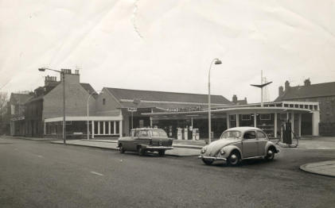
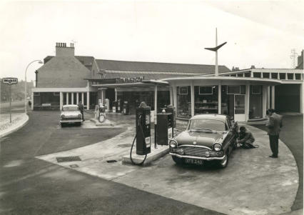
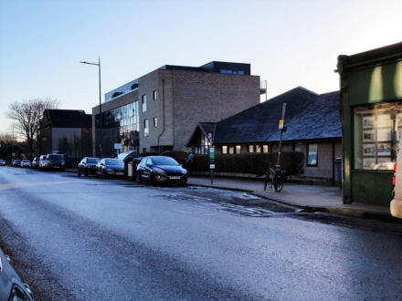
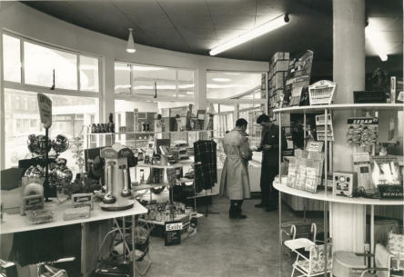
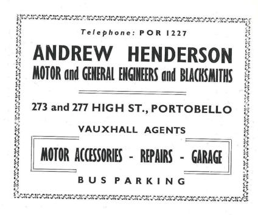

Henderson’s Garage
It is always surprising where one can find out new information about Portobello. In his autobiography A Twentieth Century Life, Paul H Scott relates details of his childhood in Portobello in the 1920s. He lived in what he describes as ‘a nineteenth century solid stone house in Hope Lane which ran into the High Street. On the opposite side of the lane was a much grander house, three storeys to our two, with a larger garden. This was called Argyll House because it was said to have been the residence of the Edinburgh factor of one of the Dukes of Argyll.’ He relates two incidents from his childhood thus:
“Once, when I must have been about six, I walked along the promenade with a girl employed to look after my brother as she pushed him in his pram. It was one of these capacious four-wheeled affairs that were usual at the time. She met a young man and became so involved in conversation that she let go of the pram. It sailed majestically towards the edge of the promenade and flew into space over the sand. I remember a moment of panic, but my brother in a nest of blankets and pillows was unharmed and undisturbed. The other incident must have been some years later. Two or three of us borrowed, without the formality of asking, a sailing dinghy belonging to the older brother of one of us. We succeeded in hoisting the sail and we went off at speed before a brisk wind. It was a different story as darkness fell and we tried to struggle back against wind and tide. We made it in the end, to find anxious parents, more relieved than furious, with their car headlights pointing out to sea.”
Paul’s maternal grandfather was Andrew Henderson, whom he was told was ‘one of the first people in Scotland to own a motor car. A relic of one of the early days of cars was stored in an outhouse and I think it was still there when I went off to the War.’ He says that his grandfather ‘ran a large garage at the foot of his garden on the High Street of Portobello.’ It sold and serviced cars and had a large covered storage space where people could leave their precious automobiles, rather than on the street. There was also a machinery repair workshop and a blacksmith’s forge. Horses came in one entrance for new shoes and cars in another to fill up with petrol. Paul’s father, Allan, managed the business for some years. As you can see below there is no sign of the workshop or forge in the photographs. The extreme left of the first photograph shows the cinema, now converted into flats. To the right of this, across Hope Lane, you can see the original front part of Henderson’s garage next to the two-storey stone built Georgian house. This was the main garage before the 1960s garage was built. This is where Phoenix House, formerly a DWP office and now flats, was built. The second photograph gives a close-up view of the garage forecourt and its many petrol pumps. The shop can be clearly seen and this would be where you paid for your petrol. It appears to be a very quiet Portobello High Street.


The site of the garage was where Portobello GP Surgery is now, as can be seen below.


The inside of the garage shows a treasure trove of objects, ranging from car accessories and maps to screwdrivers and picnic chairs. These original photographs of teh garage are included courtesy of Dorothy Coutts, whose uncle, Philip Christieson, was a mechanci at the garage, later becoming manager. When the garage closed, he went to work as an engineer in Buchan’s Thistle Pottery. The advertisement for the garage, below, is taken from a Guide to Portobello printed in the late 1950’s or early 1960’s.
